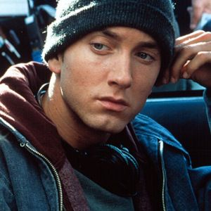
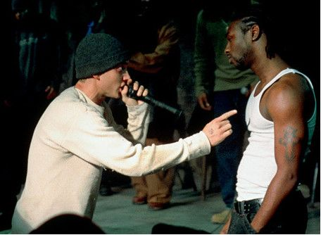
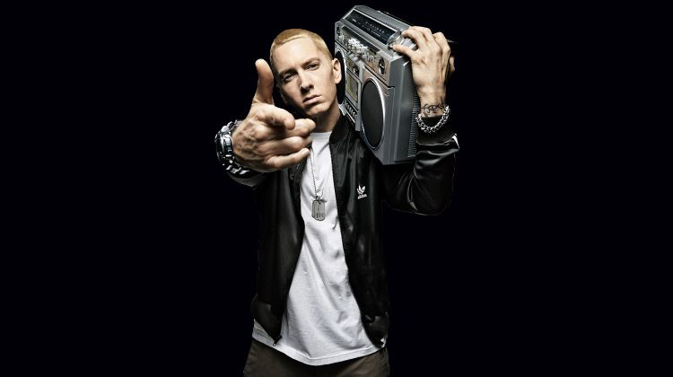
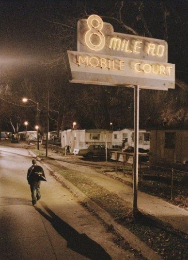
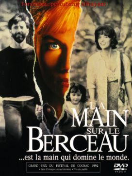
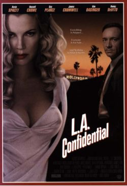
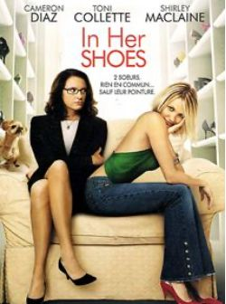
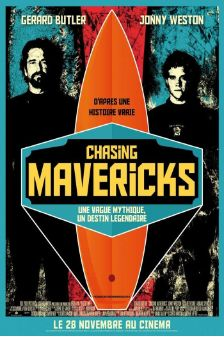

.svg)
8 Mile, est-il un film avec un réel message à faire passer sur le rap ?
Parcours atypique d’un rappeur blanc
8 Mile est un film autobiographique américain dans l'univers rap réalisé par Curtis Hanson. Dans ce film, on suit le parcours d'un jeune homme blanc nommé Jimmy Smith Jr. Son plus grand rêve est de se faire une place dans le rap. Il désire construire sa vie dans un milieu ou les noirs se sont imposés. Sa couleur de peau ainsi que ces problèmes familiaux lui portent préjudice. Jimmy vie dans une caravane au cœur de la ville de Detroit. Son seul moyen pour s'évader c'est d'écrire des textes sur sa vie.
La vie B-Rabbit
B-Rabbit connaît beaucoup de difficultés dans sa vie. Accompagné par une bande d'amis durant le film, il connaît le début de son ascension dans le rap. Son ami et MC Future l'aide à réaliser son rêve. Future organise le soir des battles de rap où chacun peut venir s'affronter. Un jour connaissant le talent de son ami blanc, il l'invite pour une battle. Au moment de son passage, Jimmy perd ses moyens et n'arrive pas à sortir le moindre mot de sa bouche. Jimmy travaille à l'usine, il décide après l'affrontement d'abandonner son rêve. Il veut consacrer sa vie à sa famille et à son travail. Son patron commence à faire confiance à Jimmy voyant qu'il s'implique de plus en plus, ce qui n'est pas du goût de ses amis. Ils persistent à convaincre celui-ci d'effectuer une dernière battle pour montrer de quoi il est capable. B-Rabbit fini par accepter et ce soir-là devient un réel tournant dans sa vie. Opposé à un membre ennemi des " Leaders of the Free World " B-Rabbit remporte les 2 premiers rounds. Le troisième round est déterminant et se joue contre Papa Doc tenant du titre. Il compare alors la vie difficile qu' il a par rapport à celle de Papa Doc qui vit bien et étudiait dans un collège privé. B-Rabbit met a terre son adversaire et réussi à mettre une ambiance folle dans la salle grâce à ces références et son style propre à lui.
B-Rabbi incarn par Eminen
Dans ce film, B-Rabbit est incarné par le rappeur mondialement connu " Eminem ". Ce choix est fait par le producteur Bryan Grazer. Longtemps intéressé par la puissance de ce nouveau style musical, il décide de rencontrer Eminem en personne. Il retrouve en lui un personnage très charismatique qui peut plaire à l'écran. Les premiers instants de cette rencontre sont assez froids, Eminem ne sort pas un mot de sa bouche. Au bout d'un certain temps il décide de prendre la parole et est séduit par le projet. Selon Grazer, Eminem " s'est révélé un personnage étonnamment éloquent ".
Pourquoi 8 Mile ?
Le titre 8 Mile fait référence à la route " 8 Mile Road " à Detroit mais ce n'est pas tout. Le réalisateur représente la ligne de séparation entre deux éléments. D'un côté les quartiers et banlieues noirs et de l'autre les contrées blanches. Curtis Hanson montre dans cette interprétation que malgré que Jimmy soit blanc, il fait face aux difficultés et réussi à se faire une place dans un milieu noir. Le message qu'il fait passer est que dans la vie tout est possible et réalisable.
Bande annonce
Liste des films
   La Main sur le berceau (1992)
L.A. Confidential (1997)
In Her Shoes (2005)
Chasing Mavericks (2012)